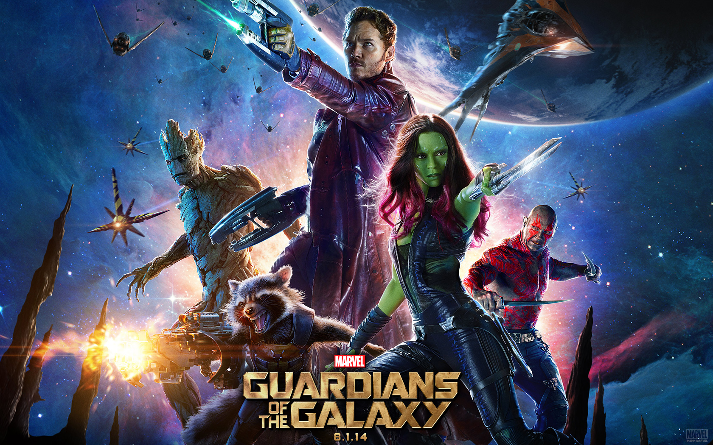
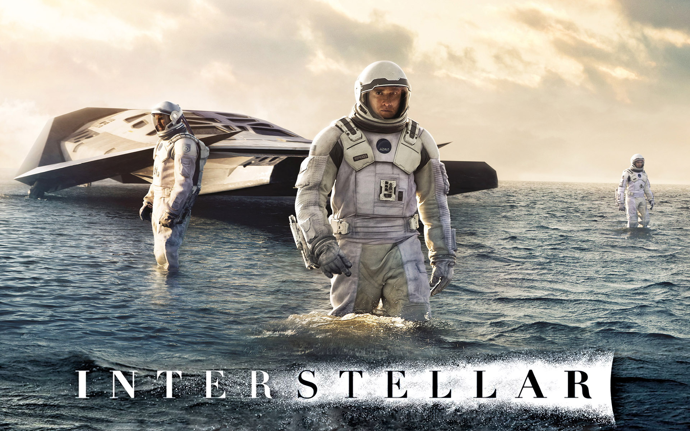

About me
After working on SAP and on Norauto supply's Chain, I integrated LeWagon
 in April 2018 to learn more about coding API's !
in April 2018 to learn more about coding API's !
Besides my work, I enjoy running and practising a martial in the club that I manage : The MTJ !
Favourite Movies
|  |  |  |
Guardians of the Galaxy |
Interstellar |
Sword-art-Online |
| Guardians of the Galaxy : In the far reaches of space, an American pilot named Peter Quill finds himself the object of a manhunt after stealing an orb coveted by the villainous Ronan. | Interstellar : In Earth's future, a global crop blight and second Dust Bowl are slowly rendering the planet uninhabitable. Professor Brand (Michael Caine), a brilliant NASA physicist, is working on plans to save mankind by transporting Earth's population to a new home via a wormhole. But first, Brand must send former NASA pilot Cooper (Matthew McConaughey) and a team of researchers through the wormhole and across the galaxy to find out which of three planets could be mankind's new home. | Sword-art-Online : Experience an all new adventure with Kirito, Asuna, and their party members as they explore the world of “Ordinal Scale,” a new hit game utilizing augmented reality technology. Players are about to find the line between the virtual world and reality beginning to blur and their worst nightmares coming true… As his fellow players find themselves in danger, the hero is called upon once again – can Kirito save his friends, or is this going to be game over for him…? |